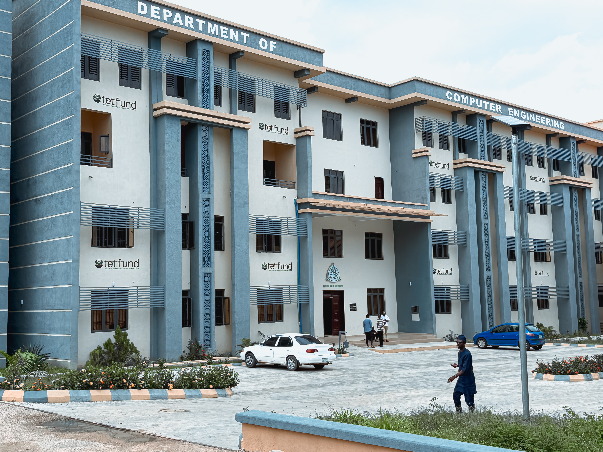

Academic Excellence
Undergraduate and postgraduate programs accredited by the Nigerian Universities Commission and the Council for the Regulation of Engineering in Nigeria (COREN).
View programs →Faculty of Engineering
Established as part of the Faculty of Engineering at Ahmadu Bello University, Zaria — training engineers to design, build, and secure the computing systems that power tomorrow, in line with the Faculty's roots dating back to 1955 and the University's founding in 1962.

1962
University Founded
1,200+
Alumni
25+
Faculty Members
6
Research Labs
Welcome
Undergraduate and postgraduate programs accredited by the Nigerian Universities Commission and the Council for the Regulation of Engineering in Nigeria (COREN).
View programs →Active research in embedded systems, AI, networking, and cybersecurity, with dedicated laboratories and student project support.
About the department →Industry-aligned curriculum, internship placement support, and a strong alumni network across Nigeria's tech sector.
Meet our students →Admissions for the next academic session are open. Review requirements and apply online.
Latest
March 2026
Department showcases final-year projects and hosts industry guest lectures.
Read more →February 2026
State-of-the-art lab equipped for IoT and embedded systems coursework.
Read more →January 2026
M.Eng and Ph.D applications now open for the 2026/2027 session.
Read more →